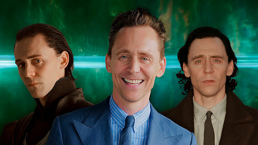
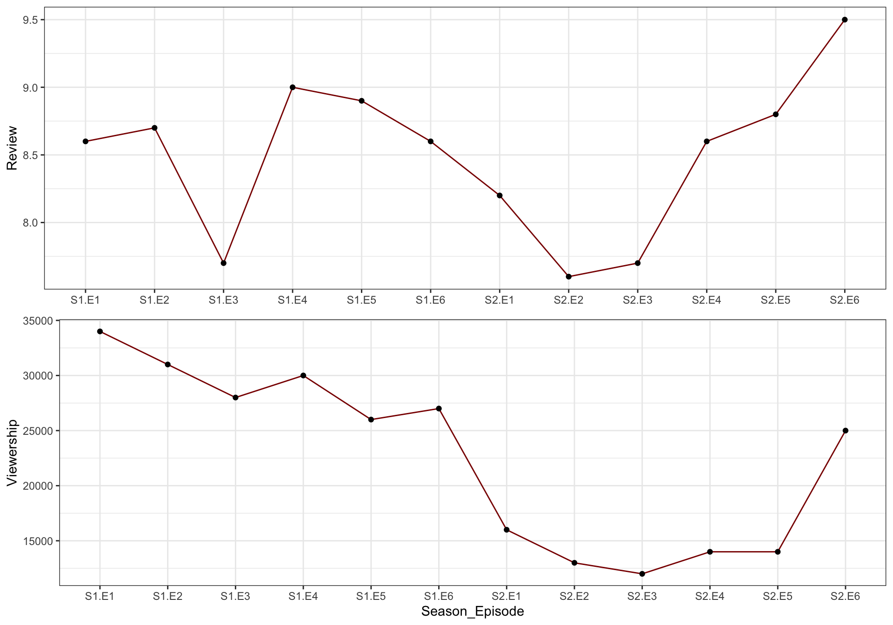
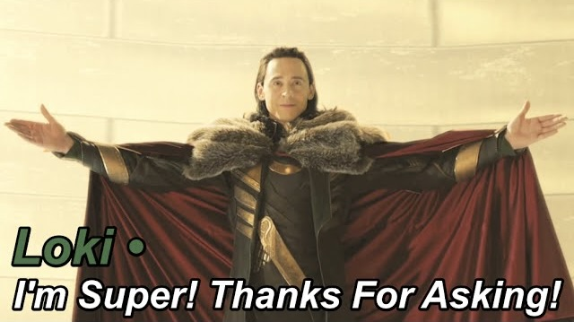

| Celebrity | Character |
|---|---|
| Tom Hiddleston | Loki |
| Gugu Mbatha-Raw | Ravonna Renslayer |
| Wunmi Mosaku | Hunter B-15 |
| Eugene Cordero | Casey / Hunter K-5E |
| Tara Strong | Miss Minutes (voice) |
| Owen Wilson | Mobius M. Mobius |
| Sophia Di Martino | Sylvie |
| Sasha Lane | Hunter C-20 |
| Jack Veal | Kid Loki |
| DeObia Oparei | Boastful Loki |
| Richard E. Grant | Classic Loki |
| Jonathan Majors | He Who Remains / Victor Timely |
| Rafael Casal | Hunter X-5 / Brad Wolfe |
| Kate Dickie | General Dox |
| Liz Carr | Judge Gamble |
| Neil Ellice | Hunter D-90 |
| Ke Huy Quan | Ouroboros "O.B." |
| Richard Dixon | Robber Baron |

1 What is Loki?
Loki is an American television series created by Michael Waldron for the streaming service Disney+, based on Marvel Comics featuring the character of the same name. It is the third television series in the Marvel Cinematic Universe (MCU) produced by Marvel Studios, sharing continuity with the films of the franchise. The series takes place after the events of the film Avengers: Endgame (2019), in which an alternate version of Loki created a new timeline. Waldron served as head writer and Kate Herron directed the first season, with Eric Martin and the duo Justin Benson and Aaron Moorhead serving as head writer and leading the directing team for the second season, respectively.
2 Premiere and Finale
Loki premiered on June 9, 2021. Its first season, consisting of six episodes, concluded on July 14 and is part of Phase Four of the MCU. It received positive reviews from critics, especially for the performances. A second season, also consisting of six episodes, ran from October 5 to November 9, 2023, as part of Phase Five. It also received positive reviews, with praise for its conclusion, musical score, and Loki’s character arc.
3 Cast of Loki
In the table below you may find the cast of this TV Series and the the names of the characters they played.
4 The Protagonist
The role of Loki is played by Tom Hiddleston.
The Asgardian god of mischief and Thor’s adopted brother, based on the Norse mythological deity of the same name. This is an alternate, “time-variant” version of Loki who created a new timeline in Avengers: Endgame (2019) beginning in 2012. Because of this, he has not gone through the events of Thor: The Dark World (2013) or Thor: Ragnarok (2017), which reformed the previously villainous character before his death in Avengers: Infinity War (2018).
The image below present a picture of the protagonist and the the character he played.

5 Summary
The series has two seasons and this section will provide the summary of each seasons.
5.1 Summary - Season 1
The first season of the American television series Loki, based on Marvel Comics featuring the character of the same name, sees Loki brought to the mysterious Time Variance Authority (TVA) after stealing the Tesseract during the events of Avengers: Endgame (2019), and is forced to help catch a dangerous variant version of himself. It is set in the Marvel Cinematic Universe (MCU), sharing continuity with the films and television series of the franchise. The season was produced by Marvel Studios, with Michael Waldron serving as head writer and Kate Herron directing.
Tom Hiddleston reprises his role as Loki from the film series, with Gugu Mbatha-Raw, Wunmi Mosaku, Eugene Cordero, Tara Strong, Owen Wilson, Sophia Di Martino, Sasha Lane, Jack Veal, DeObia Oparei, Richard E. Grant, and Jonathan Majors also starring. Loki was officially confirmed among the various Disney+ series in development from Marvel Studios in November 2018, along with Hiddleston’s involvement. Filming began in February 2020 in Atlanta, Georgia, but was halted in March due to the COVID-19 pandemic. Production resumed that September and completed in December. The series takes place after the events of the film Avengers: Endgame, in which an alternate version of Loki created a new timeline, diverging from the events of The Avengers (2012). The season has a crime thriller tone, and sets up the events of the MCU films Doctor Strange in the Multiverse of Madness (2022) and Ant-Man and the Wasp: Quantumania (2023).
5.2 Summary - Season 2
The second season of the American television series Loki, based on Marvel Comics featuring the character of the same name, sees Loki working with Mobius M. Mobius, Hunter B-15, and other members of the Time Variance Authority (TVA) to navigate the multiverse in order to find Sylvie, Ravonna Renslayer, and Miss Minutes. It is set in the Marvel Cinematic Universe (MCU), sharing continuity with the films of the franchise. The season is produced by Marvel Studios, with Eric Martin serving as head writer and Justin Benson and Aaron Moorhead leading the directing team.
Tom Hiddleston reprises his role as Loki from the film series, starring alongside Sophia Di Martino (Sylvie), Wunmi Mosaku (Hunter B-15), Eugene Cordero, Neil Ellice, Owen Wilson (Mobius), Gugu Mbatha-Raw (Renslayer), Tara Strong (Miss Minutes), and Jonathan Majors reprising their roles from the first season, alongside Rafael Casal, Kate Dickie, Liz Carr, Ke Huy Quan, and Richard Dixon. Development on a second season had begun by November 2020, and was confirmed in July 2021, with Martin, Benson, and Moorhead all hired by late February 2022. Filming began in June 2022 at Pinewood Studios and concluded in October. Dan DeLeeuw and Kasra Farahani were revealed as additional directors for the season in June 2023.
6 Basic Statistics
6.1 Dataset
The table below shows the season, episode number, the review for each episode, and the viewership.
| Season | Episode | Review | Viewership |
|---|---|---|---|
| 1 | 1 | 8.6 | 34000 |
| 1 | 2 | 8.7 | 31000 |
| 1 | 3 | 7.7 | 28000 |
| 1 | 4 | 9.0 | 30000 |
| 1 | 5 | 8.9 | 26000 |
| 1 | 6 | 8.6 | 27000 |
| 2 | 1 | 8.2 | 16000 |
| 2 | 2 | 7.6 | 13000 |
| 2 | 3 | 7.7 | 12000 |
| 2 | 4 | 8.6 | 14000 |
| 2 | 5 | 8.8 | 14000 |
| 2 | 6 | 9.5 | 25000 |
6.2 Plot
The figure below presents (Figure 1) present a line plot showing the how the review scores and viewership changed as the new episodes came.
Figure 1: Review Scores and Viewership by Season Episode

6.3 Observations
- The data contains information about two seasons of a TV series.
- Each season consists of six episodes.
- The “Review” column contains ratings for each episode, ranging from 7.6 to 9.5.
- The “Viewership” column contains the number of viewers for each episode, ranging from 12000 to 34000 views.
- There is a trend of decreasing review scores from the first season to the second season, as the review scores for the first season are generally higher compared to those for the second season.
- Some correlation between review scores and viewership exist, as episodes with higher review scores tend to have higher viewership numbers.
- The worst reviews were noted for S1.E3, S2.E2, and S2.E3
7 Summary and Review
Generally, it is very much recomended to watch Loki (TV Series). Though, some episodes may disappoint but otherwise it is one of the best Marvel Cinematic Universe TV series.Find out the trailer here.
Furthermore, you may find one of IMDB’s reviewers review useful:
Tip
I held off on this until the final episode. The series started brilliantly, and they packed an enormous amount into each episode - but as it became more complicated I became a little apprehensive about how it would all finish up - I shouldn’t have been, they smashed it out of the park.
Episode 6 is one of the best episodes of TV I’ve ever watched - but that sounds redundant, because the standard is so high all round that it’s top shelf movie quality production all the way.
Every aspect of production is so finely attuned that this was a joy to watch.
Having said that, it sounds like it was a show not a story, but make no mistake, this is a very self assured piece of story telling controlled with real finesse.
Loki season 2 is a comfortable 9.5 in my book - a really well crafted epic journey.
By: rich-mac
